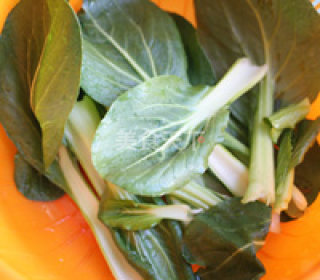
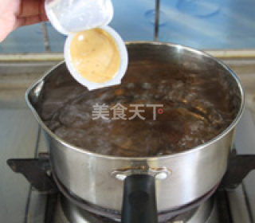
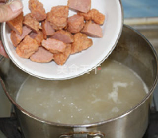
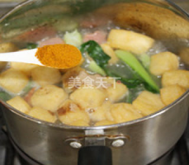
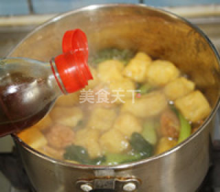
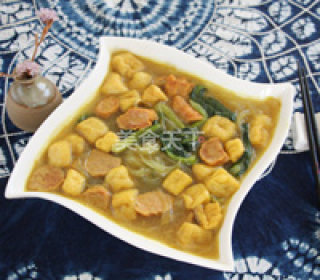

Culinary Art |
Culinary Art |
|  |  |  |
First Step: Remove the oil from the roots, wash and control the water. |
Second Step: Put water in the pot. Boil the heat and put in the thick soup. Stir well and simmer for five minutes. |
Third Step: Cut the pork meatballs and open the fire. The soup will be rolled down to the wide powder, medium heat, cooked 2, 3 minutes into the beef meatball. |
|  |  |  |
Forth Step: Cook for about 1 minute and then go down to the bean curd, put in the cooking, add the powder, and add the curry powder. | Fifth Step: Put in the black pepper and add the sesame oil. | Sixth Step: Stir well and cook until cooked. |